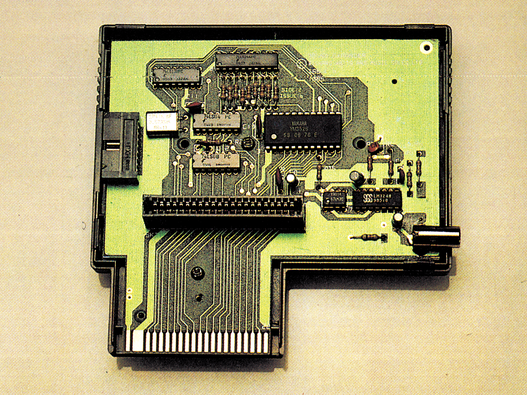
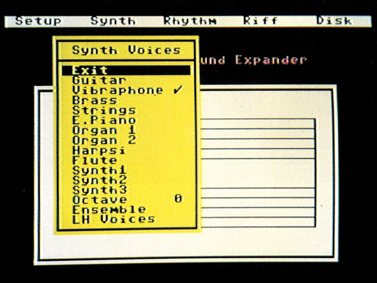
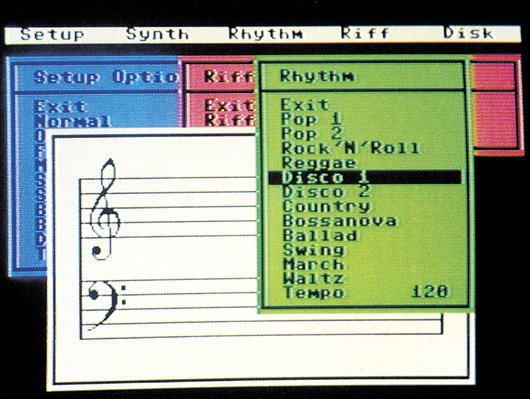

Computer-Musik
Ein neues Musik-Modul garantiert achtstimmigen Ohrenschmaus in Synthesizer-Qualität. Exote für Profis oder Entertainer für die ganze Familie? Ein Test zeigt die Stärken und Schwächen dieses »Hypra-Moduls«.
Das Bemerkenswerteste an diesem Modul ist folgender Umstand: Der Sound-Chip des C 64 wird vollkommen abgeschaltet! Um nämlich glasklaren Sound zu erzeugen, ist er einfach zu schwach. Ein besonders leistungsfähiger Synthesizer-Chip der neusten Generation übernimmt seine Arbeit. Vorgestellt wurde das Wunderwerk von Music Sales Limited, die schon mit ihrem »Sound Sampler« einen echten Knüller brachten.
Versteckt ist der neue Super-Chip in einem Modul für den Expansion-Port (Bild 1). Das besondere an diesem Baustein ist, daß er nach dem neuartigen Prinzip der FM-Synthese arbeitet. Kennern von Synthesizern dürfte diese Art der Klangerzeugung bereits ein Begriff sein, da beispielsweise der DX 7 oder der DX 21 von Yamaha (in der Pop-Musik bekannte Profi-Geräte) nach dem gleichen Prinzip arbeiten. Die Synthese erfolgt hierbei durch die Frequenz- und Amplitudenmodulation mehrerer Sinusgeneratoren und nicht wie üblich über Oszillatoren und Filter (wie auch beim SID).

So wird also unser C 64 mit dem Sound Expander zu einem achtstimmigen FM-Synthesizer, der an Klangqualität alles bisher Dagewesene weit in den Schatten stellt…
Stecken wir einmal das Modul in den Expansion Port und die mitgelieferte Softwarediskette in das Laufwerk. Es ist möglich, den Sound Expander über ein Keyboard zu spielen, das allerdings im Lieferumfang nicht enthalten ist. Man muß es zum Preis von 280 Mark extra dazu kaufen. Eine Buchse zum Einstecken des Keyboards ist zu diesem Zweck am Modul vorhanden. Zum Zeitpunkt des Tests stand uns das Keyboard leider noch nicht zur Verfügung, aber erste Fingerkontakte auf der Musik-Messe in Frankfurt zeigten eine gute Qualität. Die Tasten stehen in puncto Stabilität und Druckpunkt denen von großen Synthesizern in nichts nach. Aber auch über handelsübliche Aufsatz-Tastaturen oder die normale Computertastatur läßt sich der Sound Expander spielen. Und das gar nicht mal so schlecht, wie man vielleicht vermuten könnte.
Nach dem Laden meldet sich der Expander mit Notenlinien und einem Auswahlmenü in der obersten Bildschirmzeile (Bild 2). Das Menü umfaßt folgende Kommandos: SETUP, SYNTH, RHYTHM, RIFF und DISK (nur bei der Diskettenversion).

Nun kann man mittels der Funktionstasten Fl, F3 und F7 einen Menüpunkt auswählen. Das kann anfangs Probleme bringen, doch nach einiger Zeit hat man sich an diese recht ungewöhnliche Steuerung gut gewöhnt.
Wählt man einen Menüpunkt, so rollt ein Fenster am Bildschirm herunter und zeigt nun ein entsprechendes Untermenü. Diese Technik der Pull-Down-Menüs ist sehr benutzerfreundlich und gestaltet die Arbeit mit dem Soundexpander äußerst einfach.
Im Normalmodus erzeugt man auf der Zahlenreihe und der QWERTY-Reihe der Tastatur per Tastendruck die verschiedenen Töne. Die gespielten Noten erscheinen dabei gleichzeitig auf den Notenlinien.
Interessant ist, daß man (mit etwas Fingerakrobatik) durch gleichzeitiges Drücken mehrerer Tasten bis zu acht (!) Töne auf einmal erklingen lassen kann. Akkorde sind also kein Problem mehr. Doch wozu umständlich Dreiklänge per Hand spielen, wenn man dasselbe im »Einfinger-Akkord-Modus« haben kann. Mit jeweils einer Taste lassen sich hier alle Dur- und Mollakkorde der C-Dur-Tonart abrufen. Ist die »Memory«-Option eingeschaltet, so hält der Computer auch beim Loslassen der entsprechenden Taste den Akkord weiter, bis man ihn ändert oder ausschaltet. Wem die Grundtonart C-Dur nicht genügt, der kann mit »Transpose« in jeder beliebigen Tonlage spielen.
Speziell für das Extra-Keyboard gibt es wie bei einem professionellen Synthesizer eine Keyboard-Split-Funktion, bei der das Tastenfeld in Melodie- und Begleitsstimme aufgeteilt werden kann.
Zur Begleitung spielt der Computer bei eingestellter »Fingered Chord«-Funktion auch noch den passenden Baß. Eine richtige automatische Heimorgel also.
Doch was wäre ein Synthesizer ohne verschiedene einstellbare Klangstimmen. Mit der Option »Synth« kann man dies für die Melodie- und Begleitstimme getrennt tun, und bei Bedarf auch zwischen drei Oktaven wählen. Acht verschiedene Instrumente stehen dabei zur Verfügung.
Der nächste und auch wohl der verblüffendste Menüpunkt ist die eingebaute Rhythmusmaschine »Rhythm«. Von Pop über Swing bis zum Walzer findet man so ziemlich von jeder Musiksparte einen Vertreter (Bild 3).

Doch der Rhythmus allein macht nicht die Musik, dachten sich die Programmierer, und so wird für Einfingerpianisten und Automatikfans zu jedem Rhythmus eine Begleitautomatik bereitgestellt. Einschalten kann man sie durch »Fingered Chord« im Set-Up-Untermenü, und was man dann zu hören bekommt, ist wahrer Ohrenschmaus. Mit perfekter Einleitung (Intro), die am Anfang per Taste aufgerufen wird, erklingt die Begleitung mit Baß in jedem beliebigen Akkord. Ein ebenso gelungener Abschluß (Outro) beendet dann das selbstgespielte Stück. Selbstverständlich kann man über die QWERTY-Tastaturreihe eine Melodie dazu spielen, doch die Automatik hört sich auch für sich alleine bereits wie ein perfektes Stück an. Hat man das Keyboard angeschlossen, so ist die Automatik auch von dort aus steuerbar.
Nicht weniger faszinierend ist der nächste Menüpunkt: die »RIFF-MACHINE«:
Rhythmusmaschine eingebaut
Was es damit auf sich hat, ist schnell erklärt. Ein Riff-Stück ist ein Musikstück, das aus mehreren verschiedenen Teilen besteht, den sogenannten »Riffs«. Jedes Riff-Stück hat zwölf derartige Teile, die sich über die QWERTY-Reihe der Computertastatur aufrufen lassen. Aus diesen zwölf Riffs kann sich nun jeder sein eigenes Musikstück nach Lust und Laune zusammenstellen, indem er einfach die entsprechenden Riffs auf Tastendruck auswählt. Bis zu 256 Riffs können vorgewählt werden, die dann der Computer der Reihe nach abspielt. So klingt also bei jedem das Riff-Stück anders. Eine recht gute Idee.
Vier hervorragende Riff-Titel werden auf der Diskette mitgeliefert. Daneben stellen die Programmierer noch einige »normale« Demo-Musiktitel bereit, die es sich wahrlich anzuhören lohnt. Die fantastischen Fähigkeiten des Sound Expanders kommen hier noch einmal voll zur Geltung.
Schließlich gibt es noch eine weitere »bank« an Instrumentstimmen auf der Diskette, die man ebenfalls zum Spiel nutzen kann.
Doch auch das perfekteste Programm hat seine »Tücken«: Beim Ausschalten eines Rhythmus oder eines Riff-Stückes, haben es die Programmierer offensichtlich nicht geschafft, den Sound-Chip davon zu überzeugen, »still zu sein«, was sich durch ein mehr oder weniger lautes, knurriges Brummen im Lautsprecher bemerkbar macht. Dummerweise liegt dieser Ton in einem Frequenzbereich, der mit der Zeit sehr unangenehm werden kann. Ein weiterer, äußerst lästiger Mangel: Die Anleitung zum Sound-Expander ist ganze vier (!) Seiten DIN A6 lang, und obendrein in englisch verfaßt. Bei einem solch professionellen Modul könnte man eigentlich mehr erwarten. Weiterer negativer Punkt: Die Diskette ist mit einem vorsintflutlichen Kopierschutz ausgestattet, der den Tonkopf der Floppy lauthals rattern läßt (zudem eine wenig schonende Prozedur). Warum man die Software unbedingt schützen mußte, da sie ohne Modul ja ohnehin wertlos ist, wird wohl nie ergründet werden.
Fazit: Der Sound Expander macht ihren C 64 also zu einem professionellen Mini-Synthesizer…
Editor fehlt
Oder doch nicht? Möglicherweise fehlt an ihm ein entscheidender Punkt, der einen echten Synthesizer charakterisiert: Das Editieren all seiner wunderbaren Eigenschaften und das Verändern der Instrumentstimmen ist beim Sound Expander nicht vorgesehen. Man kann also »nur« die vorprogrammierten Stimmen und Rhythmen benutzen, was auf die Dauer doch etwas langweilig wird. Laut Auskunft von Music Sales Limited ist ein entsprechendes Editorprogramm jedoch in Vorbereitung, so daß man in Verbindung mit dem Extra-Keyboard einen perfekten achtstimmigen Synthesizer erhält. Wer jetzt beim Preis von 395 Mark für das Modul mit Software aufstöhnt, bedenke, daß ein professioneller Synthesizer vom Schlage eines Yamaha DX 7 ab 3000 Mark kostet. Wenn man nun einmal zusammenrechnet (395 Mark Modul plus 280 Mark Keyboard plus zirka 100 Mark für den Editor plus zirka 1000 Mark für C 64 und Floppy), so erhält man für rund 1800 Mark eine durchaus vergleichbare Synthesizer-Anlage, mit der man obendrein noch die gesamte C 64-Software nutzen kann.
(Michael Thomas/tr)Deutscher Vertrieb durch: Music In Print GmbH, Rheinischer Ring 31a, 5210 Troisdorf-Sieglar